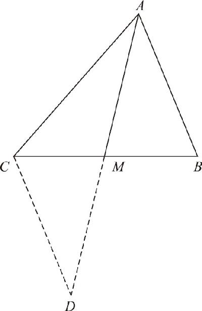
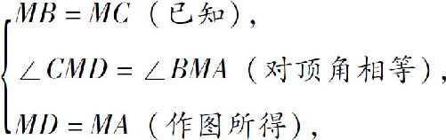

初中数学的难点主要有两个：一个是代数中的因式分解；另一个就是几何中的证明．原因很简单，这两类问题都没有一个固定的解题思路，只能利用“发散思维”来解决．所谓发散思维就是不能“一条道走到黑”，必须多方面、多角度去尝试，最后指不定通过哪条路线能解决问题．而与之相对的另一种思维方式就叫线性思维．能用线性思维解决的问题都有相对固定的套路．
比如我们在解方程的时候，不管它是二元一次方程，还是一元二次方程，不管题目多么复杂，都可以按照移项、合并同类项、消除系数、套用公式这些步骤，即使你采用了一条道走到黑的方法，也能解决．线性思维不一定就是走直线，偶尔也会拐个弯，但是基本没有别的岔道口可走，只要顺着路线拐过去就行了，就像在铁路或者高速公路上行驶一样，只要顺着道走下去，一定不会跑偏．
可是几何证明不行，你走不了多远，就得退回来看看，判断一下是否能够通过其他方法解决，试了一下不行，就再接着返回去，走得更远一点．没错，几何证明题就有这个特点，任何一种固定的解题思路都是靠不住的，解决所有的几何证明题都只能依靠发散的思维．了解了几何证明题的这种特点，我们就应该知道，解决所有证明题没有什么特殊的高招，根本方法还是：不断试错、不断修正、笔耕不辍、其解自得．必须不停笔地反复在纸上推演计算，不断地列出条件，不断地推导证明，不断地试错，不断地修正．但是，几何的定理那么多，题目的条件又那么复杂，应该从哪儿下手呢？解决几何证明题有两种基本思路：正向思维和逆向思维．
正向思维，就是根据题目给出的条件和我们头脑中的相关定理，逐步推导出最终结论，如果一次推导不出来，那就继续往下推导；逆向思维，就是先看结论，分析一下要想满足这个结论需要用到什么定理，需要凑齐哪些条件，然后结合题意继续追问，这些条件又需要哪些其他条件才能满足．当几何题比较复杂的时候，常常需要把这两种思路结合起来，正向推导不行，就逆向推导试试，两边凑一凑，条件就越凑越多，什么时候凑齐了，这题目也就证明出来了．这就像挖山体隧道一样，在一座大山的两侧一起开工，什么时候接上头了，什么时候就算通了．不过，如果你的两条思路没碰上头，都把山体给挖通了，那也没关系，并且我就要恭喜你，终于学会一题多解了．
正向思维和逆向思维要求我们，必须把所有的知识点通过各种不同的方式进行归纳总结．比如，三角形全等的判定方法有多少，必须有“边角边”“角边角”“角角边”和“边边边”．证明一个角等于另一个角有几种证明方法？如果只能回答出来三角形全等，就忘了平行线也能证明，等腰三角形的“三线合一”也能证明．要想快速解决几何问题，就必须经常把这些定理翻来覆去地用，不但要知道给你什么条件能证明什么结论，还应该知道，想要证明什么结论可能用到哪些定理．
如图8－1所示，有一个普通的三角形ABC ，已知其中的两条边AC ＞AB ，M 是BC 的中点．求证：顶点A 附近的两个角∠CAM ＜∠BAM ．

图8－1
首先尝试一下正向的推导：大三角形被分成了两个小三角形，这两个小三角形的底边相等，中间的公共边也相等，但是，左右的两条边不相等，所以想证明全等那是不可能了．题目指出AC ＞AB ，根据大边对大角不难得出：∠B ＞∠C ．但是题目没让我们比较这两个角的大小，要比较的是上头那两个小角的大小．正向思维走不通了，应该试试逆向思维．
想要比较两个角的大小，有哪些定理呢？大边对大角可以，但是这两个角只能位于一个三角形内才可以，我们比较的是两个三角形的顶角，用不上这个定理．除此之外，还可以使用整体大于局部的公理，如果角和角之间有加减关系也可以比较它们的大小．比如，在大角的内部，我要是能裁剪出一个角等于那个小角，就能证明它更大．但是很遗憾，由于其他角度也不相同，我们没法儿作出一个全等三角形来．于是还只能返回去，再仔细研究一下第一种思路．
既然大边对大角要求这两个角在同一个三角形里，能不能考虑一下某个角，把这两个角移动到一个三角形里去呢？现在两个三角形的底边不是相等吗，我们就可以在这个底边的底下接出一个三角形来，让它和其中一个三角形全等！于是我们就得到了完整的证明过程：
首先，延长AM 至D ，使得MD ＝AM ，连结CD ，于是，在△AMB 和△DMC 中：

∴△AMB ≌△DMC （边角边定理），
∴CD ＝AB ，∠MDC ＝∠MAB （全等三角形的对应也相等，对应角相等）．
∵AC ＞AB （已知），
∴AC ＞CD （等量代换），
∴∠MDC ＞∠CAM （大边对大角）．
又∵∠MAB ＝∠MDC （已证），
∴∠MAB ＞∠CAM （等量代换）．
以上，我们结合了顺逆两种思维方式，证明了这道题目．在解题过程中，我们还用到了辅助线的帮助．那么几何证明题还有哪些点要注意呢？